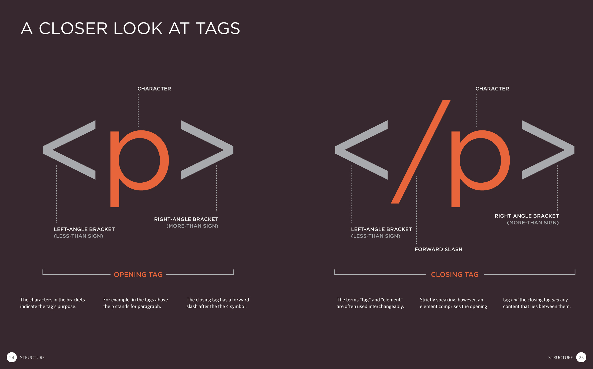

[Home](index.html)
## Structure, Style, Starter Code: Part One
[<< Previous Lesson](intro.html)&nbsp;&nbsp;|&nbsp;&nbsp;[Next Lesson >>](lesson-htmlcss-1b.html)
### HTML: Hello to Markup Languages
#### Basic Tags
What is HTML? HTML is an abbreviation for **Hyper Text Markup Language**. It is a markup language that browsers read to determine the structure and organization of a web page. Think of HTML as the frame to your webpage house, or as the skeleton to your webpage body.
HTML elements are the building blocks of web pages and are denoted by tags such as &lt;html&gt;, &lt;head&gt;, &lt;body&gt;, &lt;p&gt;, etc.
Using these building blocks, you will be able to organize content on your portfolio.

<br><span style="color:grey">Source: [HTML and CSS Book](http://www.htmlandcssbook.com/press/)</span>
___
#### Single and Multi Use Tags
Every HTML document requires a starter template that allows your file to be recognized as a web page. Take a look at the following:
```
<!DOCTYPE html>
<html>
<head>
<title>Page Title</title>
</head>
<body>
<h1>My First Heading</h1>
<p>My first paragraph.</p>
</body>
</html>```
Let's decipher these tags.
___
####Single Use Tags
* `<!DOCTYPE html>` **tells the web broswer that the document will be in HTML. This line of code MUST be in the first line of code in all of your HTML documents.**
* `<html>` **and its closing tag at the end of the file, `</html>` are used to inform the browser that the lines in between those two lines are HTML code.** You can view this tag as a *vertebrate* of sorts, connecting and unifying all the smaller components of the file.
* `<head>` **Content between head tags doesn’t show up as information that is shown on the web page. It is used in order to tell the web browser information about the page, such as the title and other files like stylesheets (CSS) and scripts (JavaScript) that are linked to the page.** Think about how your actual head encompasses your brain, a deep and rich well of knowledge that isn't externally apparent.
* `<title>` **Content between this and it’s ending tag are not displayed on the website itself, but are shown on the title bar.** Consider this your web page's nice (optional) head of hair.
* `<body>` **Visible content is displayed between this tag and it’s ending tag. Content that you want to appear on your website goes in the body section.** All your bones go in here!
####Multi-Use Tags
* `<h1>` In this tag, the text “My First Heading” is shown. Browsers view the &lt;h1&gt; tag as a heading tag to display large text over a section. &lt;h2&gt; through &lt;h6&gt; tags likewise exist, getting smaller in default size as they increase numerically.
* `<p>` Within this tag, the text “My first paragraph” is shown. Browsers view the &lt;p&gt; tag as a paragraph tag to display paragraph text within a section.
Of these tags, &lt;h1&gt; and &lt;p&gt; are **block** elements, meaning that their usage will force a new line to occur, while such tags as *image* and link tags are referred to as **inline** statements, meaning that all subsequent statements will be in the same line until a block element is reached. For a more comprehensive list of both types of elements, check out [this](https://www.w3schools.com/html/html_blocks.asp) page.
<br>
#### <span style="color:red">Challenge #1: Introduce Yourself</span>
Take the first step towards creating your own personal portfolio - content! Add headers and subheaders, a descriptive paragraph, and lists/tables of your skills and projects using the template below.
<span style="color:blue">Quick Tip: </span> You can make comments within your file (lines of text that won't be recognized as code) using the "&lt;!--" and "--&gt;" opening and closing tags.
```<!-- This is an HTML comment -->```
```
<!DOCTYPE html>
<html>
<head>
<title>_Page Title Here_</title>
</head>
<body>
<h1>_Your Name_</h1>
<h2>_Your Title_</h2>
<p>_So what is it you'd say you do here?_</p>
<h4>Skills</h4>
<ul>
<li>_Skill One_</li>
<li>_Skill Two_</li>
<li>_Skill Three+_</li>
</ul>
<h4>Projects</h4>
<table style="width:100%" border="1px solid black">
<tr>
<th>Project</th>
<th>Description</th>
<th>Date Approximation</th>
</tr>
<tr>
<td>_Project 1_</td>
<td>_Description 1_</td>
<td>_Date Approximation 1_</td>
</tr>
<tr>
<td>_Project 2+_</td>
<td>_Description 2+_</td>
<td>_Date Approximation 2+_</td>
</tr>
</table>
</body>
</html>```
Once you've copy-pasted the above into your text editor of choice and filled out the necessary fields, right click your file and select "Open in Browser" (after saving your file as a ".html" file). Your HTML should look something like this:
<img src="images/html-page.png" alt="Example HTML in Browser" style="height: 50%; width: 50%; border: solid;">
<span style="color:red">Bonus Challenge 1A: </span> What do the &lt;ul&gt;/&lt;li&gt; tags denote? What do the &lt;tr&gt;/&lt;th&gt;/&lt;td&gt; tags denote within the overarching &lt;table&gt; tags? Verify your answers [here](https://www.w3schools.com/html/html_lists.asp) and [here](https://www.w3schools.com/html/html_tables.asp).
<span style="color:red">Bonus Challenge 1B: </span> Make an ordered list of your work experience (Hint: If you get stuck, use [this](https://www.w3schools.com/html/html_lists.asp) as a reference).
<br>
[<< Previous Lesson](intro.html)&nbsp;&nbsp;|&nbsp;&nbsp;[Next Lesson >>](lesson-htmlcss-1b.html)